Hola! El meu nom és Iván, i sóc un programador junior actualment cursant la carrera de Disseny i desenvolupament
de videojocs a la Universitat de Girona.
Tot i que el meu enfocament acadèmic està en els videojocs, el meu objectiu a nivell professional està en la programació
de software en general.
Portafolio
Gestió de cotxes d'empresa
Un sistema de gestió de cotxes desenvolupat amb Blazor, .NET i MongoDB
istema de gestión de cotxes desarollado con Blazor, .NET y MongoDB
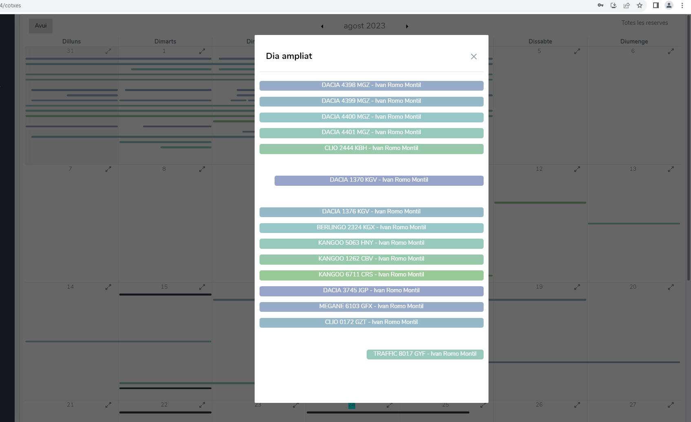
Durant la meva estada a TEG vaig tenir l'oportunitat de treballar en el front-end i el back-end d'un
sistema de gestió de cotxes.
Els usuaris podien reservar els cotxes disponibles. Un cop reservat se'ls donava un codi amb el qual
podien accedir a la clau del cotxe.
El front-end de la pàgina està desenvolupat amb Blazor (i una mica de JavaScript, en els llocs on
Blazor no arriba). Va ser un gran repte, perquè Blazor era una tecnologia molt nova i, malgrat estar
ben documentada, sí que es notava que la comunitat que hi havia darrere era molt nova.
Projecte d'escacs
Un projecte per crear una versió digital d'escacs utilitzant Unity i programació en C#.
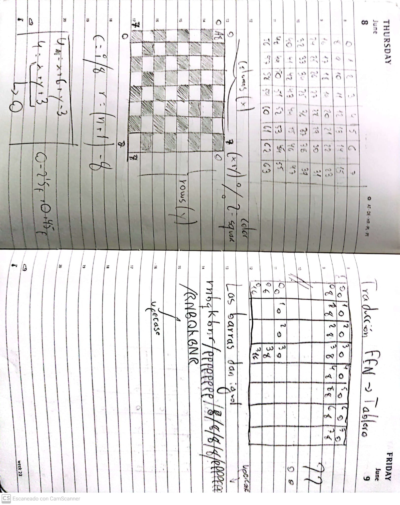
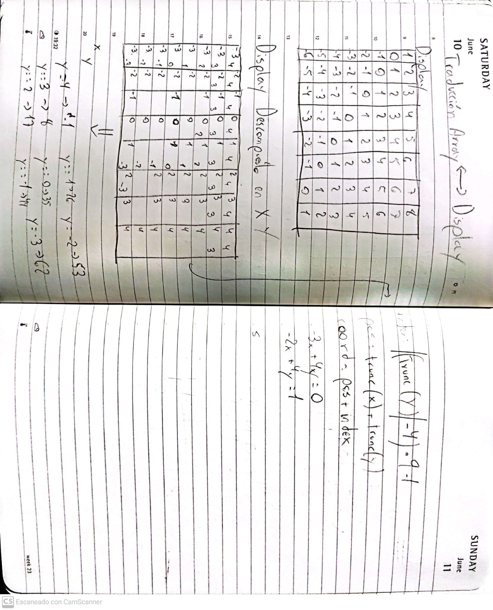
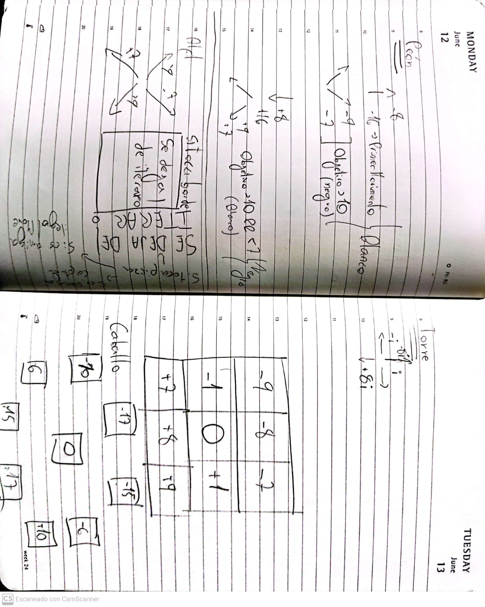
En aquest projecte em vaig centrar a implementar les mecàniques dels escacs d'una manera que fos eficient.
L'objectiu va ser poder tenir uns escacs funcionals, però que també estiguessin preparats per afegir una
intel·ligència artificial en un futur. És per això que els càlculs de posicions havien de ser el més simples
possible. Així, en el moment d'afegir una IA, tota la potència es dedicaria a aplicar el Minimax i es
perdria el menor temps possible amb els càlculs propis del joc. Explicaré dues característiques del codi que
són bastant curioses:
Vaig tenir la idea d'implementar el tauler com un vector en comptes d'una matriu, sóc conscient que és
quelcom contraintuïtiu. Però d'aquesta manera, podia moure una torre només sumant o restant un (en horitzontal)
o sumant o restant 8 (en vertical). Hi ha una fotografia on es detalla com funciona això.
D'altra banda, cercant a Internet (aquesta idea no és meva) vaig veure que en alguns projectes implementaven
les peces amb ajuda del binari. Comencem assignant un valor enter a cada peça, per exemple, el cavall blanc
era el número 11. I el cavall negre era el 19.
11 en binari és 1011 i 19 és 10011. Els dos primers bits del número ens indiquen el tipus de peça, i els següents
3 ens indiquen el seu color.
En el meu codi s'implementa d'una manera molt semblant, i planejo treure-li molt de partit quan implementi la IA.
Web de detecció de cares
Una web de detecció de cares en imatges utilitzant tres serveis d'Azure.
Junts amb un company vam desenvolupar una pàgina web en la qual pots pujar URL de fotografies i aquesta et retorna una imatge amb totes les cares d'aquesta imatge detectades. Aquest projecte va sorgir en veure que Azure ens donava llicència d'estudiants, així que vam intentar fer un projecte utilitzant les eines que ens proporcionava.
Sabem que la UI de la pàgina deixa una mica a desitjar, però el nostre objectiu real era ser capaços d'utilitzar i connectar 3 serveis d'Azure entre si.
Vam utilitzar Static Web App per a la pàgina web, Azure Cosmos DB per guardar les URL dels usuaris i la Azure Face API per a la detecció de cares.
Aplicació de llista de la compra
Una aplicació de llista de la compra desenvolupada amb Flutter, Dart i Firebase.
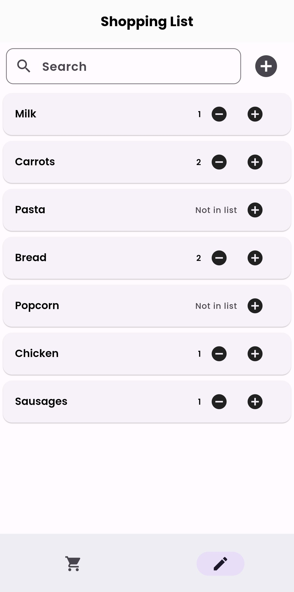
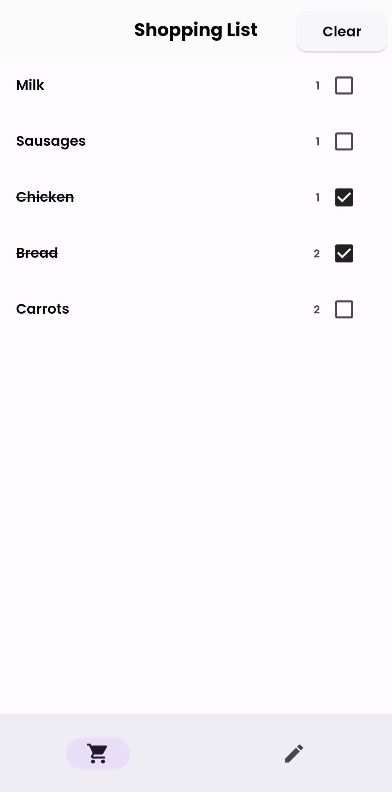
Vaig desenvolupar aquesta aplicació amb l'objectiu d'aprendre Flutter. La meva intenció principal era tenir una base de dades en MySQL, però a mesura que investigava vaig veure que hi havia molta compatibilitat entre Flutter i Firebase, i al ser ambdues tecnologies noves per a mi, vaig voler provar amb Firebase.
L'aplicació permet que cada usuari tingui dues llistes completament personals. Una és la llista d'aliments que sol comprar. L'altra és la llista de la compra en si. Així, un usuari que vulgui crear ràpidament una llista de la compra podrà veure tots els productes que sol comprar i afegir-los a la llista de la compra.
Tots les dades dels usuaris estan guardades al núvol. L'aplicació no guarda cap dada en local.
Joc mòbil
Em vaig proposar crear un joc hiper-casual per a dispositius mòbils intentant involucrar-me al màxim en
tots els camps del desenvolupament.
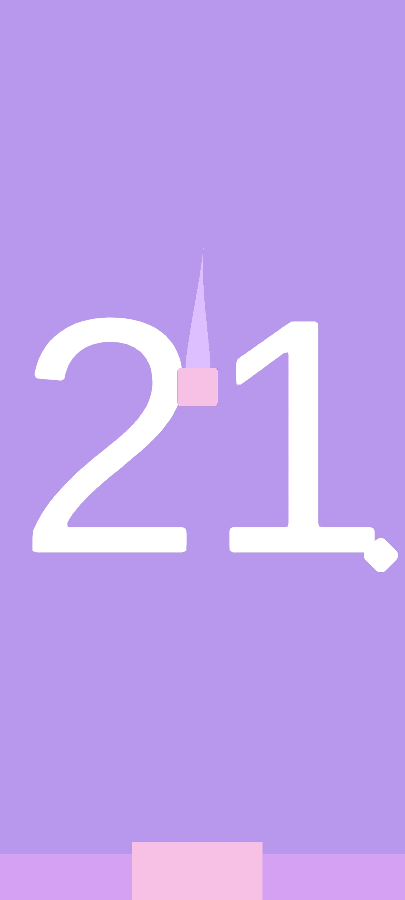
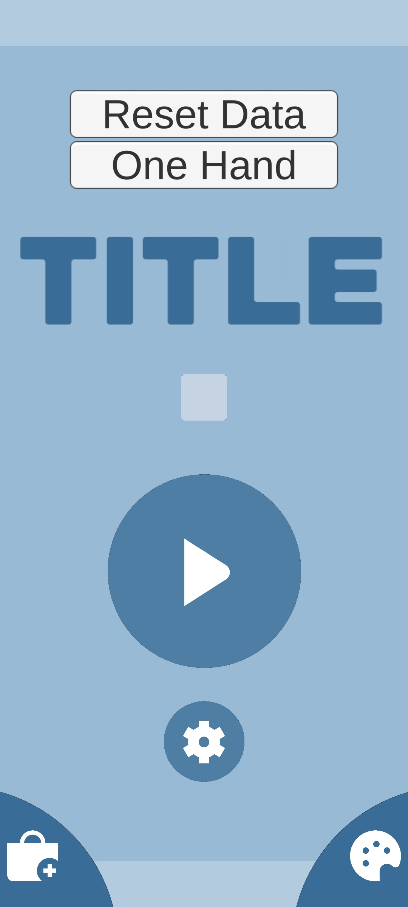
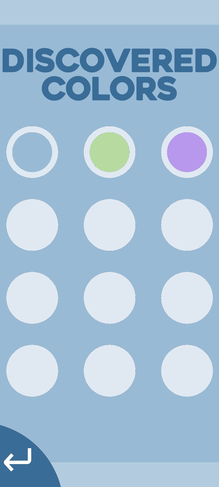
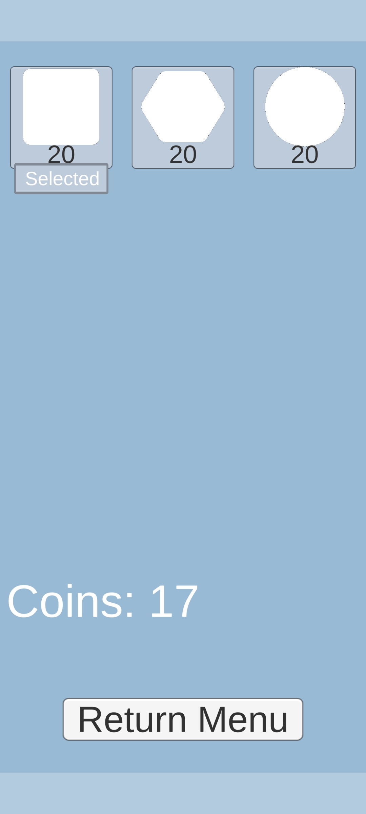
Aquest projecte es va començar amb diversos objectius en ment. Fer un joc que pogués ser llançat a
la Play Store, entendre i definir un target concret, aprendre com funcionen les eines per analitzar el
rendiment d'un joc a la Play Store. Aprendre a usar AdMob.
L'objectiu principal era el més realista, només necessitava poder fer un joc simple, amb cara i ulls, i per això em vaig decidir per fer un joc hiper-casual, perquè el que buscava amb aquest projecte no era fer un joc complex, volia aprendre sobre els altres camps que existeixen a l'hora de llançar un joc.
Per al tema del target vaig optar per intentar inspirar-me en el que feien les empreses desenvolupadores de jocs hiper-casuals, la meva referència va ser Ketchapp. Mentre buscava informació vaig veure que això del target no era cap tonteria, cada decisió del projecte havia de ser pensada amb això en ment. Des de les mecàniques fins a l'estètica, passant pel nom del joc i la complexitat de la interfície d'aquest o la quantitat de partícules a pantalla.
D'altra banda, una part del desenvolupament era fer que el joc fos intuitiu, vaig fer proves amb persones de diferents edats per veure qui responia millor. El resultat va ser que de mitjana, sense cap tipus d'indicació, les persones necessitaven al voltant de 6 intents per entendre com funcionava el joc (era massa) així que vaig aconseguir simplificar-lo i donar pistes visuals.
El joc al final va quedar en l'aire, però, tot i que al final no es va llançar, vaig aprendre moltíssim sobre el desenvolupament d'aquest.
Videojocs desenvolupats en equip
Amb un grup de sis persones vam desenvolupar dos videojocs utilitzant Unity i Unreal.
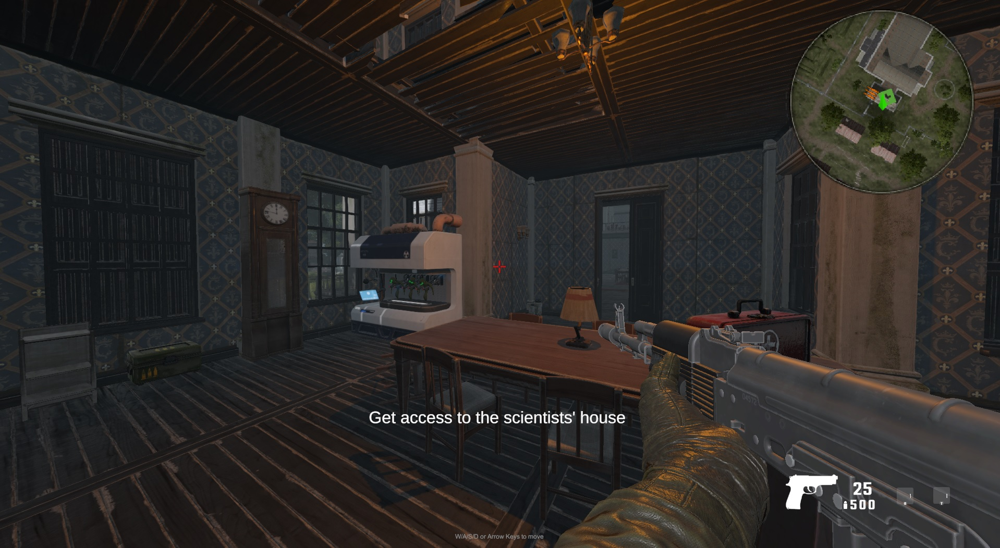
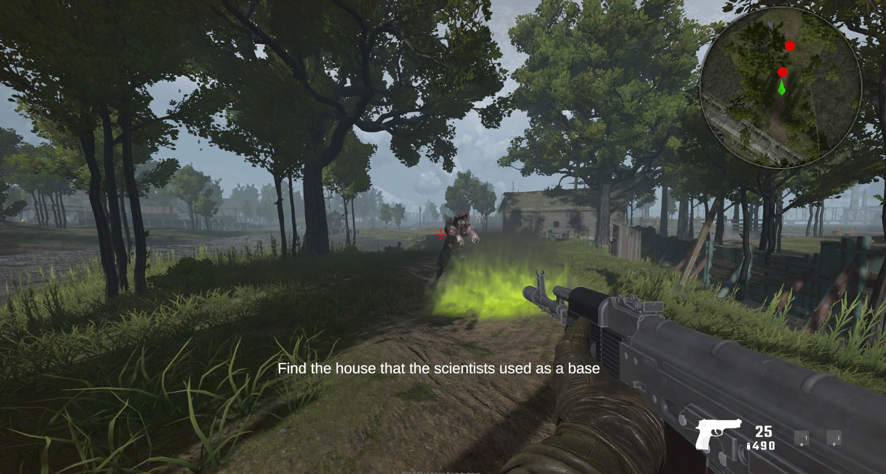
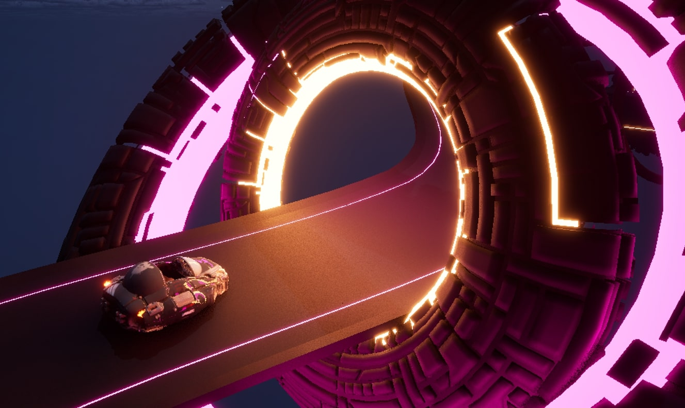
En el projecte de Unity, em vaig encarregar del comportament i resposta dels diferents tipus d'enemics. D'altra banda, vaig ser l'encarregat d'organitzar i dirigir el projecte, vaig poder aprendre algunes metodologies àgils, i al final em vaig decantar per l'ús de SCRUM i vaig veure el molt que em fascinava gestionar projectes. També vam haver d'aprendre a usar GIT.
Programador Junior treballant en frontend i backend.
Vàries feines d'estiu
Aquestes feines m'han proporcionat una experiència valuosa en interactuar i col·laborar amb persones diverses, demostrant la meva capacitat per adaptar-me i relacionar-me amb noves persones diàriament.
 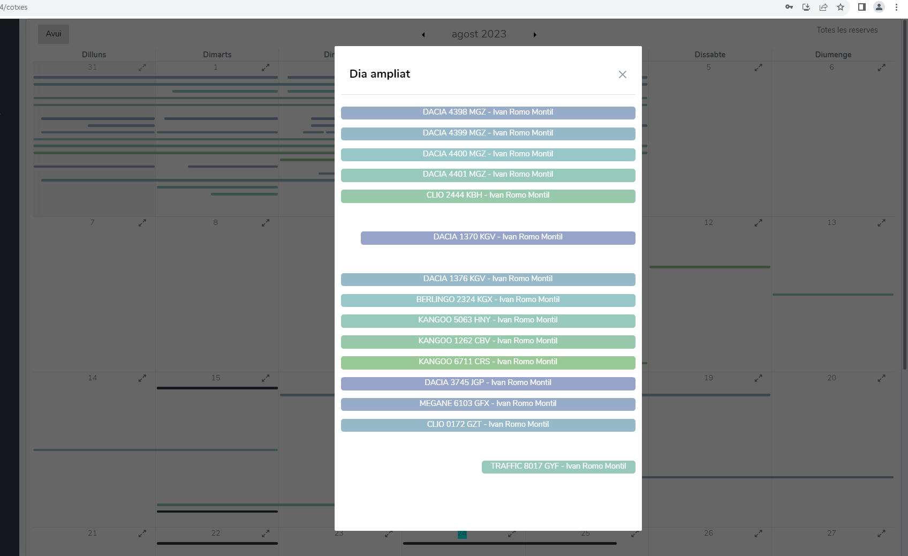
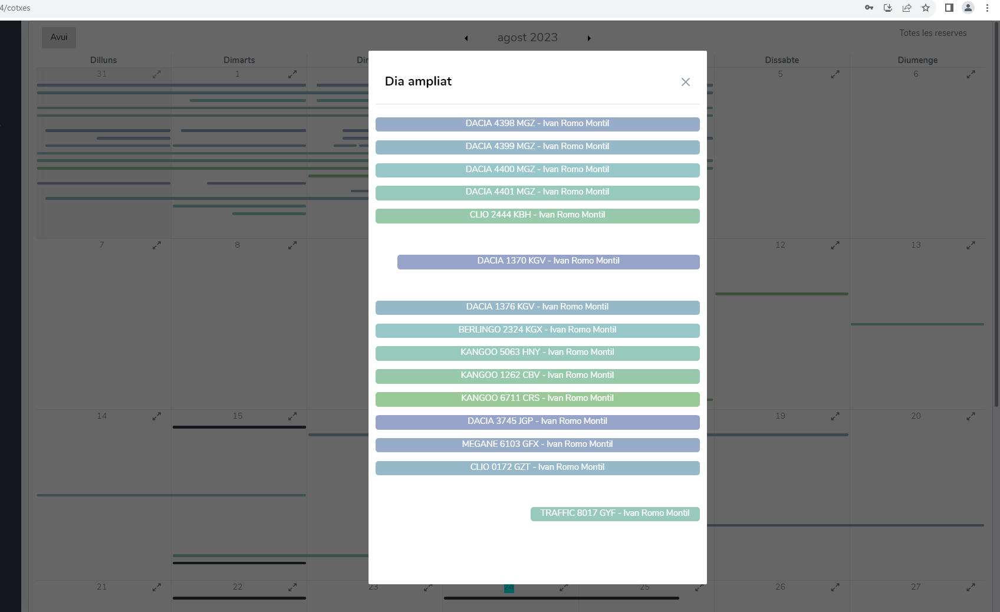